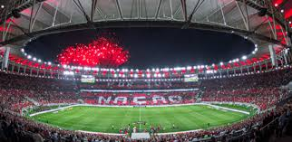
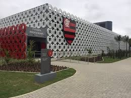
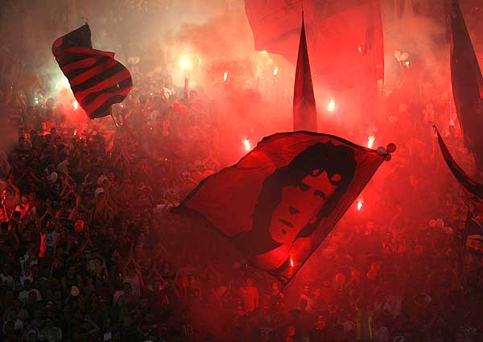
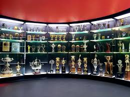

Estádio: Maracanã – O Templo Sagrado
O Maracanã é mais que um estádio, é um símbolo do futebol mundial e a casa do Flamengo em jogos importantes.
Inaugurado em 1950 para a Copa do Mundo, já foi palco de grandes finais, gols históricos e momentos épicos do
Mengão. Com capacidade para mais de 70 mil torcedores, o estádio vibra quando a torcida rubro-negra canta em
uníssono. Embora seja de propriedade do estado do Rio de Janeiro, atualmente é administrado pelo Flamengo e pelo
Fluminense. O Maraca é um verdadeiro caldeirão quando o Flamengo entra em campo, especialmente em clássicos ou
decisões de campeonato.
História: Um Século de Tradição e Glórias
Fundado em 17 de novembro de 1895 como clube de remo, o Flamengo só passou a disputar futebol oficialmente em 1912.
Desde então, se tornou uma potência nacional e internacional. O auge veio com Zico nos anos 1980, culminando no
título da Libertadores e do Mundial Interclubes em 1981. Décadas depois, em 2019, o time voltou ao topo do mundo com
um elenco estrelado liderado por Gabigol, Bruno Henrique, Arrascaeta e o técnico Jorge Jesus. A campanha daquele ano
entrou para a história. Hoje, o Flamengo é referência em gestão, estrutura, títulos e torcida, consolidando-se como
um dos maiores clubes do planeta.
Centro de Treinamento: Ninho do Urubu
O Centro de Treinamento George Helal, mais conhecido como Ninho do Urubu, é onde o elenco profissional e a base do
Flamengo treinam. Localizado em Vargem Grande (Rio de Janeiro), o CT passou por grande modernização e hoje é
referência na América do Sul. Conta com campos oficiais, alojamentos, academia de ponta, departamentos médicos e
estrutura de alto nível. O Ninho também abriga jovens talentos das categorias de base que sonham em vestir o Manto
Sagrado. É ali que nascem, crescem e se desenvolvem os futuros craques do clube.
Estadio

Jogadores

Centro de treinamento

Torcida Apaixonada

Museu flamengo

vai para o incio
vá para próxima pagina